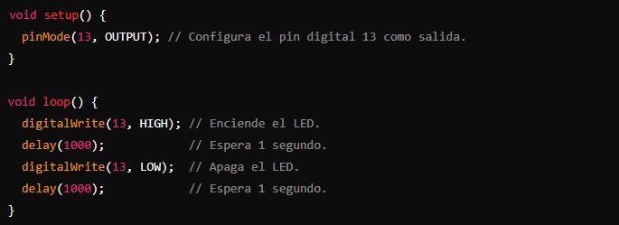

¿Qué son los sistemas embebidos?
Los sistemas embebidos son computadoras especializadas que forman parte de un sistema mayor. Su propósito principal es realizar una tarea específica, como controlar un electrodoméstico, monitorear sensores o gestionar procesos en tiempo real. A diferencia de las computadoras personales, estos sistemas están diseñados para funcionar con recursos limitados y alta eficiencia.
Hoy en día, los sistemas embebidos están en todas partes: desde dispositivos médicos hasta electrodomésticos inteligentes, automóviles y la Internet de las Cosas (IoT). Si alguna vez has utilizado un microcontrolador como Arduino, ya has interactuado con un sistema embebido.
¿Por qué usar Arduino?
Arduino es una plataforma de hardware y software de código abierto que ha transformado la forma en que principiantes y expertos abordan los sistemas embebidos. Su principal atractivo radica en:
1. Facilidad de uso: Con una interfaz amigable y un lenguaje de programación basado en C++, es ideal para quienes están comenzando.
2. Comunidad activa: Existe una vasta comunidad global que comparte tutoriales, proyectos y soporte.
3. Hardware accesible: Las placas de Arduino son económicas y vienen en diferentes versiones para adaptarse a diversas necesidades.
C++: El motor detrás de Arduino

Aunque Arduino ofrece un entorno simplificado, su núcleo está basado en C++, un lenguaje de programación poderoso y eficiente que es ampliamente utilizado en sistemas embebidos. C++ permite:
1. Control directo del hardware: Ofrece acceso a registros, puertos y periféricos.
2. Eficiencia en memoria: Ideal para sistemas con recursos limitados.
3. Flexibilidad y escalabilidad: Desde pequeños proyectos hasta sistemas embebidos complejos, C++ se adapta.
Arduino abstrae muchos detalles técnicos, pero aprender C++ te permitirá aprovechar al máximo el potencial de los microcontroladores y dar el salto a proyectos más avanzados. Aun así, en algunos casos especificos, algunos sistemas embebidos pueden necesitar conocimiento de C o Assembly, aunque estos son los menos, vale la pena aclararlo.
Primer proyecto: ¡Hola, mundo!
El clásico primer proyecto en Arduino es encender y apagar un LED. Este simple ejercicio introduce los conceptos básicos de hardware y programación en sistemas embebidos.
Material necesario:
1. Una placa Arduino (como Arduino Uno).
2. Un LED.
3. Una resistencia de 220 ohm.
4. Cables de conexión.
Código en Arduino:
Sube este código a tu placa y observa cómo el LED parpadea. Este ejercicio ilustra cómo un programa simple puede controlar hardware físico.
¿Por qué explorar Arduino y C++ juntos?
Trabajar con Arduino y C++ te brinda una base sólida en el diseño de sistemas embebidos. Por un lado, Arduino simplifica las primeras etapas de aprendizaje, y por otro, C++ te ofrece la profundidad para crear soluciones optimizadas y escalables. Además, estos conocimientos son transferibles a otros microcontroladores más avanzados, como los basados en ARM o ESP32.
El siguiente paso: Profundizar en sistemas embebidos
Después de dominar Arduino, puedes expandir tus conocimientos explorando:
Sensores y actuadores:
Controlar motores, medir temperatura o leer datos de acelerómetros.
Protocolos de comunicación:
Dominar I2C, SPI y UART para conectar múltiples dispositivos.
Optimización en C++:
Implementar estructuras avanzadas y optimizar el uso de memoria.
Microcontroladores más avanzados:
Experimentar con plataformas como STM32 o ESP32.
Sensores y placas compatibles con Arduino:
Gracias a la activa y creciente comunidad, hay una gran cantidad de placas, sensores, etc que nos sirven para hacer nuestra experiencia con Arduino más facíl y educativa, estos son algunos de los ejemplos de placas que se usan:
Conclusión
Arduino y C++ forman una combinación poderosa para iniciarte en el fascinante mundo de los sistemas embebidos. Desde proyectos pequeños hasta aplicaciones complejas, esta dupla te permitirá entender cómo las cosas funcionan "detrás del telón" y cómo el software y el hardware se integran para dar vida a sistemas inteligentes. ¡El límite es tu imaginación!